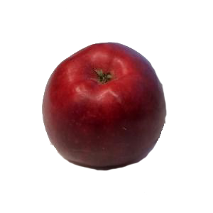

Mio (Äpple)
Mio är en äppelsort av mestadels röd färg. Den skapades i Sverige, genom en korsning av Worcester Parmän och Oranie. Äpplet har sitt namn efter Astrid Lindgrens roman Mio, min Mio. Köttet på detta äpple är vitrosa, och smaken är söt och något syrlig. Äpplet har bra resistens mot skorv.[1] Äpplet plockas för det mesta i september, och Mio är både ett ätäpple och ett köksäpple. Medelskördetid vid Alnarp(zon 1) 7 september.[2] Blomningen är medeltidig, och äpplet pollineras av bland andra Alice, Cortland, James Grieve, Katja, Lobo, Melba, Oranie, Sävstaholm och Transparente Blanche. I Sverige odlas Mio gynnsammast i zon I–IV.[3] Mio började säljas i Sverige år 1956 av Alnarps Trädgårdar.[4]
